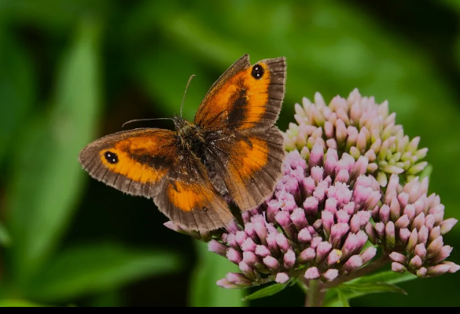

Swimming
I enjoy swimming both for fitness and fun. It’s a great way to stay active, and I often swim with friends or through a club. Beyond the exercise, I love the feeling of focus and calm that comes from being in the water.
Photographing
Though I don’t do it all the time, I enjoy capturing cinematic shots of my surroundings — especially during sunrises. There’s something about
the early light and their beautiful colors.

Chess
I love how chess keeps my mind engaged. It challenges me to think several moves ahead and to anticipate what my opponent might do next.